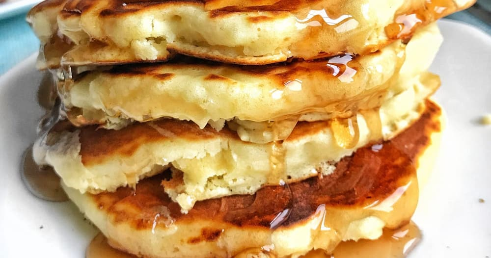

Good Old Fashioned Pancakes!
New York Cheesecake!

Description
Good old fashioned pancakes, you know them and you love them, perfect for breakfast, lunch and dinner. Find out how to make them below:
Ingredients
- 1½ cups all-purpose flour
- 3½ teaspoons baking powder
- ¼ teaspoon salt, or more to taste
- 1 tablespoon white sugar
- 1¼ cups of milk
- 1 egg
- 3 tablespoons butter, melted
Steps
- Preheat the over to 350 degrees. Grease a 9 inch springform pan.
- In a medium bowl, mix graham cracker crumbs with melted butter. Press onto bottom of springform pan.
- In a large bowl, mix cream cheese with sugar until smooth. Blend in milk, and then mix in the eggs one at a time, mixing just enough to incorporate. Mix in sour cream, vanilla and flour until smooth. Pour filling into prepared crust.
- Bake in preheated oven for 1 hour. Turn the oven off, and let cake cool in oven with the door closed for 5 to 6 hours; this prevents cracking. Chill in refrigerator until serving.